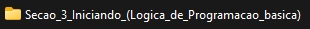

Nas pastas criadas para o projeto em python, não se deve colocar espaços ou acentos no nome, sempre letras e um número.
Exemplo:
Para criar um File em Python deve seguir as mesmas regras de nome das pastas.
O que caracteriza um arquivo Python é o (*.py)
A extensão (*.py) indica para o interpretador que o arquivo é Python.
Exemplo: